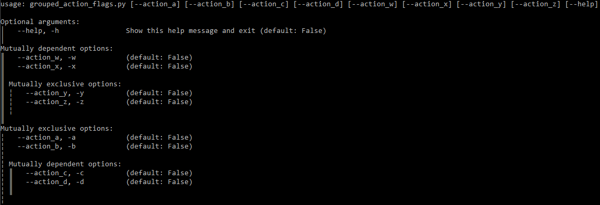

Documentation
Help Text
The --help / -h option is automatically added to Commands by default. When specified, it takes precedence over
any other parameters. The usage / help text that it prints is automatically generated based on the Command in use,
the file it is in, the Parameters in that Command, and any subcommands that are present.
The content of the help text can be configured when initializing the Command.
It is also possible to disable the --help parameter by specifying
add_help=False, if desired. If add_help is disabled, it is possible to define a different
ActionFlag to replace it, using a combination of
always_available=True, before_main=True, and order=-1 (or another
number that is lower than any other ActionFlag in the Command).
Group Formatting
To add a visual indicator for groups of parameters, specify show_group_tree=True. Example:
class Foo(Command, show_group_tree=True):
...
Using the grouped_action_flags example, we can see an example of the resulting help text:
If the output appears garbled compared to the above example, it is likely due to lack of correct UTF-8 support in the
terminal. When using PuTTY, make sure the Remote character set (in the Window > Translation config
category) is configured to use UTF-8:
reStructuredText
It is possible to easily generate RST / reStructuredText for a given Command or file containing one or more Commands. The generated RST content can then be used to generate documentation in HTML and many other formats by using Sphinx or any other tool that supports RST.
Some of the Usage & Help Text Options also apply to RST generation.
Generating RST Documentation
All you need to generate documentation for a given script that contains one or more Commands is something like the following:
from cli_command_parser.documentation import render_script_rst
def save_command_rst(script_path, rst_path):
rst = render_script_rst(script_path)
with open(rst_path, 'w') as f:
f.write(rst)
If you want more fine-grained control over RST generation than render_script_rst() provides, you can use
render_command_rst() for a single command. In the same module, a helper for
loading all Commands from a given file is also provided.
The build_docs.py script used to
generate this documentation uses render_script_rst() to generate the Example Scripts documentation based on the
examples in this project.
Building HTML documentation from the output is possible with sphinx-build and other tools, but that is out of scope
for this guide.